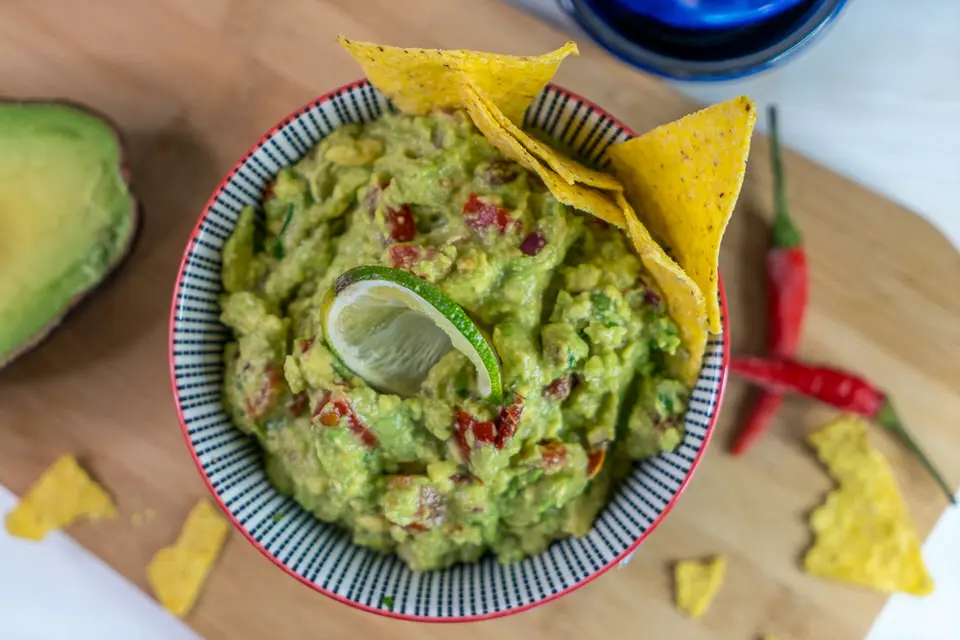

Guacamole

Description
When I was a young boy, my father took me into the city to eat some guacamole. That's how recipes start these days, right?
Delicious creamy avocado-ness, goes great with nachos, in burritos or fajitas, on toast,
or you can just stuff your face into the bowl and eat it like an animal because guacamole is delicious.
It doesn't keep well in the fridge for very long, though, so make sure to eat it all before it goes all brown and nasty.
Ingredients
- Two avocados - make sure you get nice ones that are just right, not ones that are rock solid or disgusting mush.
- One red onion, diced
- A medium-ish tomato, diced
- Coriander, chopped - unless you're one of those people that hates coriander. AKA "cilantro", for the Americans in the room
- A bit of lime juice - preferably fresh but if you're like me you'll definitely forget to buy a lime so from a bottle works too
- Chili, finely diced - optional, jalapeno is nice, but the ones around here aren't very hot so just use whatever. Taste test for spice level if you're feeling brave
- Chili powder to taste - also optional, in case you got a chili that wasn't hot enough
- A clove of garlic, minced - also also optional, I haven't added it recently but I've definitely seen my boyfriend add it before
- Salt and pepper to taste - probably way more than will seem sensible or healthy at first but it does make a big difference
Steps
- Remove avocado from skin, somehow. I always make a mess so I can't really help you here, but it doesn't really matter as long as all the good bits of the avocado end up in a big bowl
- Add the onion, tomato, lime, and chili and garlic if you're using them, to the bowl with the avocado. Mash with a fork or a potato masher.
- Once things are looking a bit smoother, add the coriander and mix it in. Keep mashing any chunks of avocado you find, unless you like it that way.
- Add salt, pepper and chili powder if you're using it, and mix them in. Time for a taste test!
- Add more seasoning (and possibly more lime juice) until you're happy with it.
- Congrats, you've got guac!